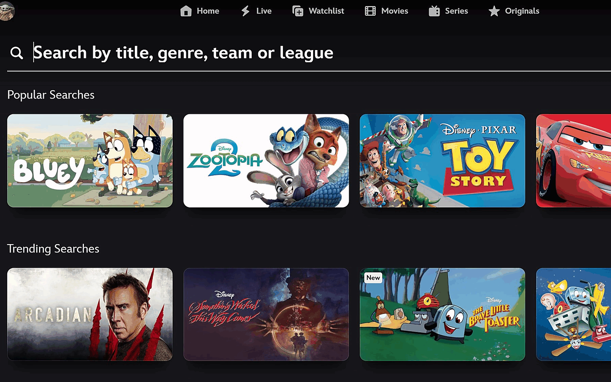

i.
PM Intern · Disney+ Search · Summer '26
Users couldn't find what they loved. The team couldn't see why.
Four projects in ten weeks. I built the ranking model its first feature-importance analysis, which turned up that adding every candidate feature at once did worse than adding the best single one. I also tested an expensive search-memory idea for almost nothing, and built Dory and Nemo, two AI assistants that two teams still use.
1stexplainability
~30m → secscited answers
2teams adopted